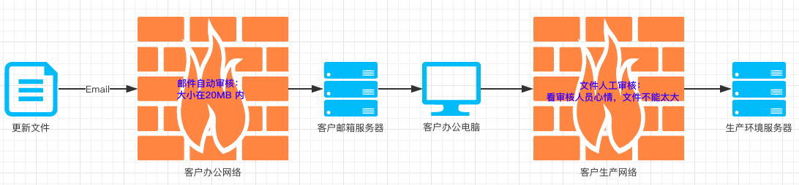

ToB 的企业往往会有 私有化交付 的需求，也就是将企业内部的应用打包部署到客户的服务器上使用。最近在交付过程中遇到 传包 的问题，由于客户方的服务器不是随便能传文件的，必须经过一级一级领导审批才行，而且过程中对传入服务器的文件大小还有限制，整个流程大致是：

而我们当前的 jar 包又特别大，一个大的可能有几百兆，往客户服务器上传文件比较坎坷，客户也经常抱怨：不是说就改几行代码么，干嘛传这么大的包？
jar 包为什么这么大呢？解压出来一个 jar 包看看：
1
2
3
4
5
6
7
8
9
10
11
12
13
14
15
16
17
18
19
20
21
22
23
24
25
26
27
28
29
30
31
32
33
34
35
36
37
| .
├── BOOT-INF
│ ├── classes
│ │ ├── application-dubbox-provider.xml
│ │ ├── application.properties
│ │ ├── application-root.xml
│ │ ├── com
│ │ │ └── dtwave
│ │ │ └── dsource
│ │ │ └── biz
│ │ │ ├── config
│ │ │ │ └── SecurityConfig.class
│ │ ├── dsource.properties
│ │ ├── git.properties
│ │ ├── logback
│ │ │ └── default.xml
│ │ └── logback.xml
│ └── lib
│ ├── activation-1.1.jar
│ ├── dsource-common-4.4.0-SNAPSHOT.jar
├── dsource-common-4.4.0-SNAPSHOT.jar
├── dsource-service-provider-d-4.4.1.jar
├── META-INF
│ ├── dubbo
│ │ └── com.alibaba.dubbo.rpc.Filter
│ ├── MANIFEST.MF
│ └── maven
│ └── com.dtwave.dsource
│ └── dsource-service-provider
│ ├── pom.properties
│ └── pom.xml
└── org
└── springframework
└── boot
└── loader
├── archive
│ ├── Archive.class
|
待续…